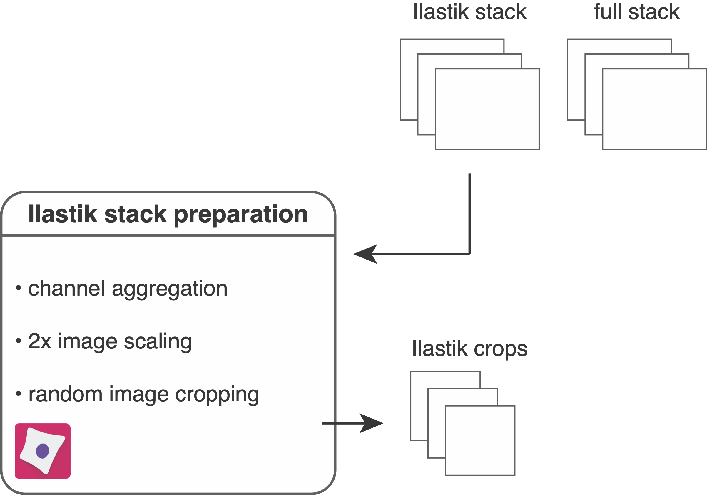
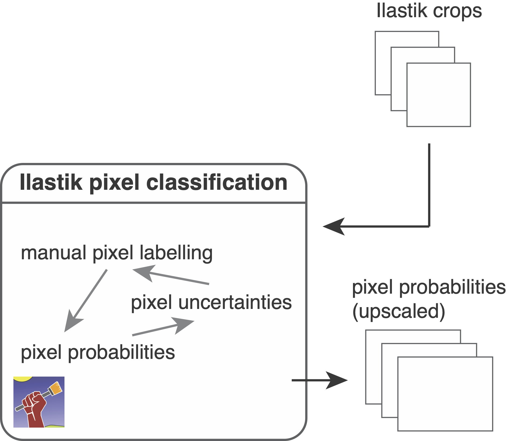

Ilastik pixel classification
In this setp, we use Ilastik to label pixels and train a random-forest classifier for semantic segmentation. This means that each pixel will be classified as "nuclear", "cytoplasmic" or "background". The probability of each pixel belonging to one of these classes will be used for image segmentation (see cell segmentation).
Prepare images for pixel classification

In the first step, the resources/pipelines/1_prepare_ilastik.cppipe CellProfiler pipeline will be used to prepare images for labelling and classification.
To get started, you will need to open CellProfiler and import the 1_prepare_ilastik.cppipe pipeline.
- Drop the
analysis/ilastikfolder into the window underImages - In
Output Settingsset theanalysis/cropsfolder asDefault Output Folder
The pipeline will read in all multi-channel images from the analysis/ilastik folder containing the suffix _ilastik.
The following steps are part of the pipeline:
- The average intensity across all channels is computed and multiplied by 100. This will later serve as visual help to find background areas during Ilastik pixel labelling.
- The average is clipped to 0 and 1 (after uint16 rescaling) to avoid out-of-range errors.
- The average channel is added to the Ilastik stack as first channel.
- The pixels of the Ilastik stack are upscaled by a factor of 2. This will increase the number of pixels in the image 4 fold and facilitates pixel labelling.
- The Ilastik stack is cropped into smaller fields of view. By default these are 500x500 pixel crops but for large datasets smaller image crops will suffice.
- The upscaled Ilastik stack is saved in
.h5format into theanalysis/ilastikfolder and the cropped images are saved into theanalysis/cropsfolder.
Train and apply a pixel classifier

Here, we will open Ilastik and perform pixel labelling as well as pixel classification.
For a detailed overview on Ilastik pixel classification refer to the manual.
After using the scripts/download_examples.ipynb script, you can find the IMCWorkflwo.ilp Ilastik project in the root directory of the repository.
This project contains a classifier pre-trained on the example IMC data.
To create a new classifier, please follow the steps below:
- Create a new
Pixel Classificationproject. - Under
Input DatapressAdd New...>Add separate Image(s)and select all.h5files in theanalysis/cropsfolder. Feature Selection: we generally recommend to select all features with σ >= 1Training: The following steps need to be performed to train the classifier- Create and rename 3 labels: Label 1 - "nucleus"; Label 2 - "cytoplasm"; Label 3 - "background"
- Observe the different channels: the last entry
Raw Inputin the box on the bottom left indicates the current channel. You can change the channel by using the buttons on the left and the channel order is stored in the_ilastik.csvfiles in theanalysis/ilastikfolder. - Adjust the contrast of the channel: This can be done by selecting the
Window Levelingtool underAdd Label. Holding the left mouse button and moving the mouse changes the visual appearance of the channel. Clicking the right mouse button resets the channel intensities. - Label the pixels: Select the
Brush Cursortool and draw lines on the image. You can get an orientation by looking at the labels in theIMCWorkflow.ilpproject. Switch between labels to label pixels as "nucleus", "cytoplasm" and "background". Label pixel in an opiniated fashion: If you see in the nucleus channel that two nuclei are stuck together but have a faint dip in intensity in between, label this dip as "cytoplasm". Encircle nuclei with "cytoplasm". - After labelling a few images, click on
Live Update. This will show the current prediction for the three classes. Labelling while keepingLive Updateenabled slows down the process. - Observe the uncertainties by clicking the "eye" next to
Uncertainty. This will show you regions in which classification uncertainty is highest. These regions need to be re-labelled. A well trained classifier has low uncertainty within class regions (e.g., nuclei) and high uncertainty at class borders (e.g., between nuclei and cytoplasm).
Prediction Export: Once the classifier is well trained, perform the following steps to export predictions:Source:ProbabilitiesChoose Export Image Settings:Convert to Data Type: unsigned 16-bit- check
Renormalize Format: tiff
Batch Processing: In this step the pixel probabilities of all images will be generated.Select Raw Data Files...: Select all_s2.h5files in theanalysis/ilastikfolder.- Click on
Process all files
The last step will generate 3 channel RGB images containing the pixel probabilities for image segmentation (see cell segmentation).
Output
The following outputs have been generated during this step of the pipeline:
analysis/crops: this folder contains the image crops of the ilastik stack in.h5format for ilastik training.analysis/ilastik/..._s2.h5: upscaled ilastik stack in.h5format for pixel classification.analysis/ilastik/..._s2_Probabilities.tiff: 3 channel RGB images containg the pixel probabilities for segmentation.